Module Purpose
This module presents the core Chapter 8 content in textbook-style form. It supports understanding of Islam's foundations, sacred text, major practices, community life, branches, and place in Canada.
This chapter is best studied as a lived tradition where belief in one God, revelation, worship, ethics, charity, fasting, pilgrimage, and community belonging all reinforce one another.
Learning Outcomes
- Explain how Islam connects submission to God with belief, worship, ethics, and community responsibility.
- Describe Allah, tawhid, Muhammad, the Qur'an, and the Hijra using accurate Islamic vocabulary.
- Identify the Five Pillars and explain how they structure Muslim life across daily, yearly, and lifetime practice.
- Explain the roles of Shahadah, salat, zakat, sawm, and hajj in shaping Muslim faith and discipline.
- Describe how mosque life, imams, and the ummah connect individual believers to community and global belonging.
- Compare Sunni and Shia Islam respectfully without treating them as separate religions.
- Connect Islam in Canada to pluralism, public life, and the need to avoid stereotypes and Islamophobia.
- Use reliable sources to research a mosque, Muslim practice, celebration, or community and produce a basic bibliography.
Chapter Sections
- Islam as a Living System of Belief and Action
- Submission, Trust, Obedience, and Peace
- Allah, Muhammad, the Qur'an, and the Muslim
- The Five Pillars: Structure and Purpose
- The Rhythm of the Five Pillars
- Shahadah and Salat
- Zakat: Justice and Compassion
- Sawm and Ramadan
- Hajj, Mecca, and the Kaaba
- Mosque, Imam, and Community Life
- Sunni and Shia Islam
- Islam, Diversity, and Canada
- The Ummah: Believer, Mosque, History, and Global Community
- Researching Islam Respectfully
- Chapter 8 Glossary
Chapter 8 Core Ideas
| Idea | Meaning |
|---|---|
| Tawhid | Islam begins with the oneness of God and the call to orient all of life toward Allah. |
| Revelation | Muhammad, the Qur'an, and the Hijra anchor Islamic belief, guidance, and sacred history. |
| The Five Pillars | Faith is practiced through declaration, prayer, charity, fasting, and pilgrimage rather than belief alone. |
| Embodied discipline | Salat, wudu, Ramadan, zakat, and hajj show that Islam shapes body, time, wealth, and community life. |
| Mosque and ummah | Believers are linked through worship, learning, service, and the wider Muslim community. |
| Diversity within Islam | Sunni and Shia Muslims share the same religion while differing in history and religious authority. |
| Canada and pluralism | Islam is part of Canadian public life and must be studied with precision rather than stereotype. |
| Respectful research | Strong work focuses on specific examples, reliable sources, and accurate language about Muslim communities and practices. |
Chapter 8 Knowledge Map
| Area | What it includes |
|---|---|
| Foundation | Islam, Allah, tawhid, submission, Muhammad, the Qur'an, and the Hijra |
| Core belief | One God, revelation, prophecy, angels, moral responsibility, and the Day of Judgment |
| Lived practice | The Five Pillars: Shahadah, salat, zakat, sawm, and hajj |
| Community | Mosque, imam, ummah, Sunni and Shia diversity, and shared responsibility |
| Canada and research | Canadian Muslim communities, pluralism, public understanding, and credible sources |
1. Islam as a Living System of Belief and Action
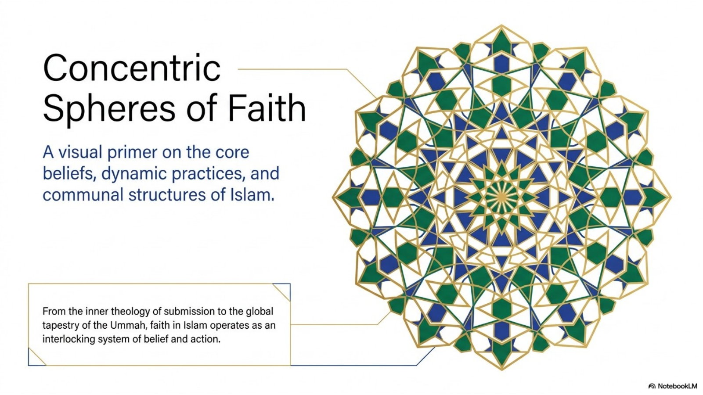
Islam is a monotheistic religion centered on Allah, the Arabic word for God. In World Religions 30, Islam should not be treated as only a set of ideas, a cultural identity, or a list of rules. It is a complete way of orienting life toward God through belief, worship, ethics, family life, charity, and community.
The word Muslim refers to a person who submits to God. This does not mean that a Muslim is passive or unthinking. It means that faith is meant to shape the whole person: what a believer thinks, how a believer worships, how a believer treats others, and how a believer participates in the wider community.
The circle image is useful because Islam works through interlocking layers. At the centre is belief in Allah. Around that are daily practices such as prayer, charity, fasting, and study. Around those are community structures such as the mosque, the ummah, and public religious life. The inner belief and outer action are not meant to be separated.
2. Submission, Trust, Obedience, and Peace
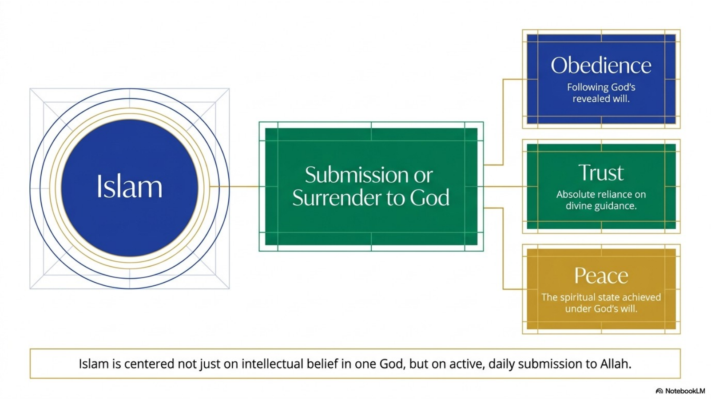
The word Islam is often explained through the ideas of submission, surrender, and peace. The core point is that a believer is called to place God's will above ego, greed, social pressure, and selfish desire. In this sense, submission is a disciplined spiritual choice, not a sign of weakness.
Submission to God includes obedience to God's revealed guidance, trust in God's wisdom, and the pursuit of peace that comes from living under God's will. A Muslim is expected to show faith not only through private belief, but through visible patterns of life: prayer, honesty, generosity, restraint, family responsibility, and care for those in need.
This is why Islam cannot be reduced to intellectual belief in one God. Belief matters, but it is expected to become action. The believer's relationship with God is built through remembrance, worship, moral responsibility, and trust.
3. Allah, Muhammad, the Qur'an, and the Muslim
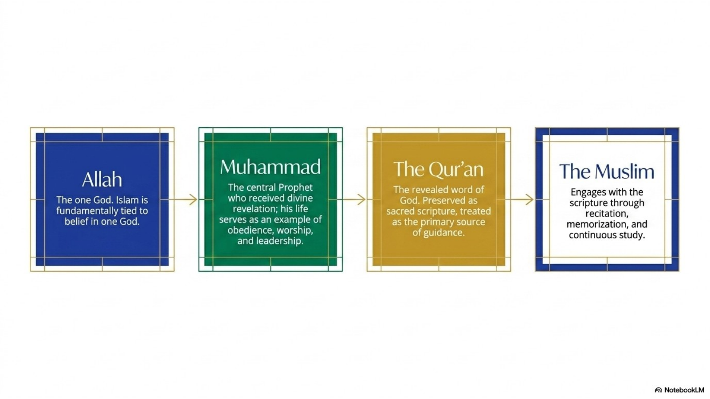
The central belief in Islam is tawhid, the oneness of God. Muslims believe Allah is one, merciful, just, all-knowing, and the Creator of everything. This belief rejected the polytheism and idolatry that were common in much of Arabia before Islam. In the Islamic view, worship belongs to God alone.
Muhammad is central to Islam because Muslims understand him as the Prophet and Messenger through whom God revealed the Qur'an. Muslims do not worship Muhammad and do not understand him as divine. His importance is that he received revelation, preached the worship of one God, built the early Muslim community, and became an example of obedience, worship, leadership, and moral conduct.
According to Islamic tradition, Muhammad was born in Mecca around 570 CE. He was known for honesty and worked as a merchant. He married Khadijah, who became one of his earliest supporters. During periods of retreat and reflection, Muhammad received revelations through the angel Gabriel. These revelations continued over roughly twenty-three years and became the Qur'an.
Muhammad's preaching challenged idol worship, social inequality, and the power of Mecca's leaders. Opposition grew, and in 622 CE Muhammad and the early Muslims migrated from Mecca to Medina. This migration is called the Hijra. It marks the beginning of the Islamic calendar and the development of a more organized Muslim community.
Muslims understand the Qur'an as the revealed word of God. It is recited, memorized, studied, and treated as the primary source of guidance. Arabic recitation is especially important in Islamic worship, while translations help non-Arabic speakers understand the meaning. The Qur'an shapes belief, prayer, ethics, law, worship, and community life.
4. The Five Pillars: Structure and Purpose
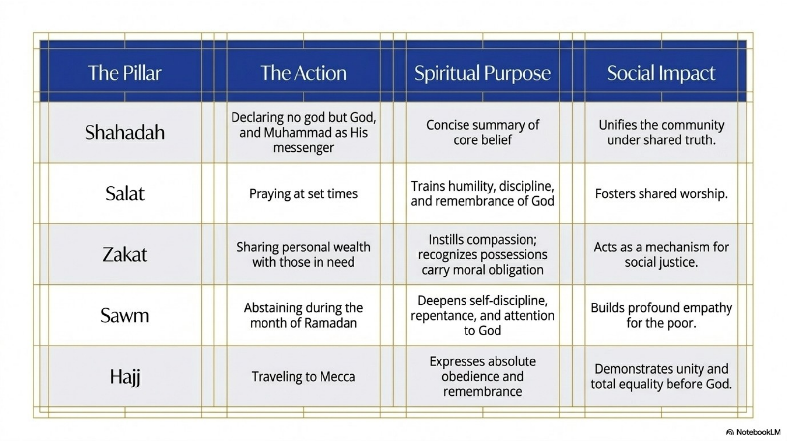
The Five Pillars are major practices that structure Islamic faith and daily life. They are not random religious duties. Together, they move from belief to worship, from personal discipline to social responsibility, and from local community to global unity.
Each pillar has both a spiritual purpose and a social effect. The Shahadah declares the foundation of belief. Salat trains daily remembrance of God. Zakat connects wealth with justice. Sawm develops self-control and compassion. Hajj gathers Muslims from around the world in equality before God.
The Five Pillars are one of the clearest examples of how Islam joins belief and action. A Muslim is not only asked to affirm faith internally, but to practice it in repeated, embodied, and communal ways.
5. The Rhythm of the Five Pillars
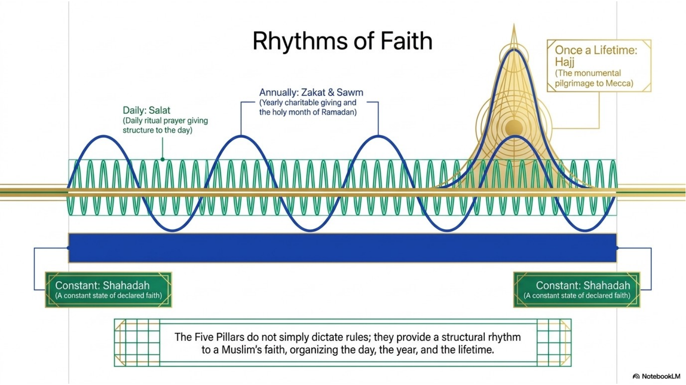
The Five Pillars create a rhythm of life. The Shahadah is the constant declaration that anchors Muslim identity. Salat shapes each day through regular prayer. Zakat usually appears as a yearly act of giving. Sawm shapes the holy month of Ramadan. Hajj may occur once in a lifetime if a Muslim is physically and financially able to make the pilgrimage.
This rhythm matters because religion is not left as an occasional thought. Islam repeatedly brings the believer back to God through time, body, wealth, community, memory, and action. Prayer interrupts the day. Fasting reshapes desire. Charity changes how wealth is understood. Pilgrimage places believers in a global community of worship.
Muslim cultures are diverse, and not every Muslim community looks the same. Even so, the Pillars provide a widely recognized structure that links Muslims across languages, countries, and historical periods.
6. Shahadah and Salat
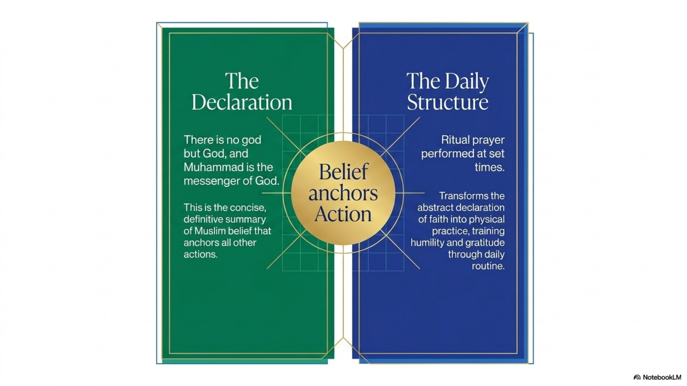
The Shahadah is the declaration of faith: there is no god but God, and Muhammad is the Messenger of God. It is short, but it summarizes Islam's core foundation. The first part affirms belief in one God. The second part affirms Muhammad's role as God's Messenger.
Salat is ritual prayer performed at set times. Muslims pray in the direction of Mecca, a direction called the qibla. Prayer includes recitation, standing, bowing, prostration, and sitting. These movements train humility because the body itself participates in worship.
Before salat, Muslims perform ritual washing called wudu. This prepares the body and mind for prayer. Salat matters because it structures the day around remembrance of God. It also connects the individual believer to the wider Muslim community, especially during Friday congregational prayer.
7. Zakat: Justice and Compassion
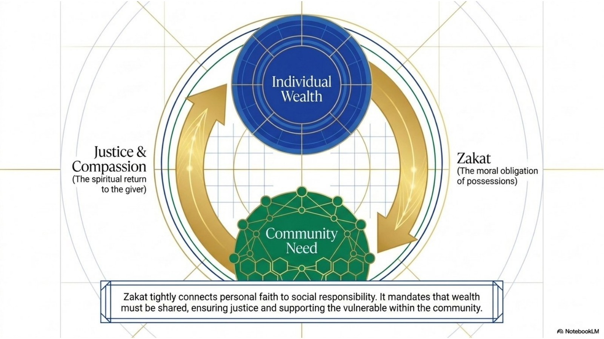
Zakat is required almsgiving. The word is connected with purification and increase. The idea is that wealth should not be treated as purely private property with no moral obligations. In Islam, possessions are connected to responsibility before God and responsibility toward the community.
A common traditional calculation is 2.5 percent of surplus wealth over a year, though exact details can vary by context and interpretation. The deeper point is not only the percentage. Zakat teaches that the poor and vulnerable have a claim on the resources of the community.
Spiritually, zakat purifies the giver from greed and self-centredness. Socially, it helps support those in need. This is why zakat joins justice and compassion: it is an act of worship that also works as a mechanism for social care.
8. Sawm and Ramadan
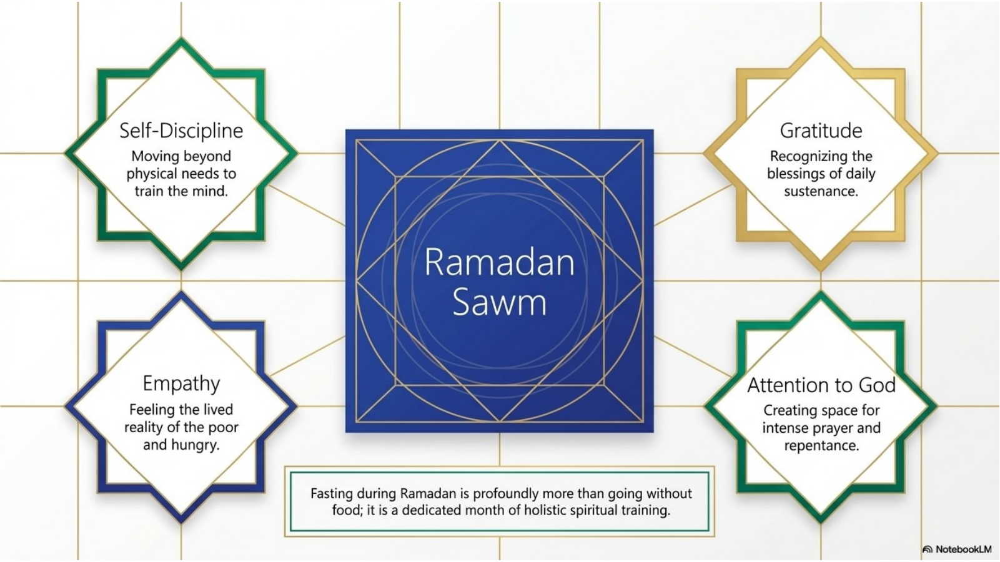
Sawm means fasting. During Ramadan, Muslims fast from dawn until sunset by abstaining from food and drink. The fast is not meant to be only physical. It is a month of self-discipline, repentance, prayer, Qur'an recitation, generosity, and renewed attention to God.
Ramadan is especially significant because Muslims connect it with the revelation of the Qur'an. Going without food and drink helps train the mind and body to resist selfish desire. It also builds gratitude for ordinary blessings and empathy for people who experience hunger and poverty.
The daily breaking of the fast is called iftar. Communities often gather for meals, prayer, and charity during Ramadan. The month ends with Eid al-Fitr, a celebration that includes worship, food, family, generosity, and community joy. Some people are excused from fasting for health, age, pregnancy, travel, or other serious reasons.
9. Hajj, Mecca, and the Kaaba
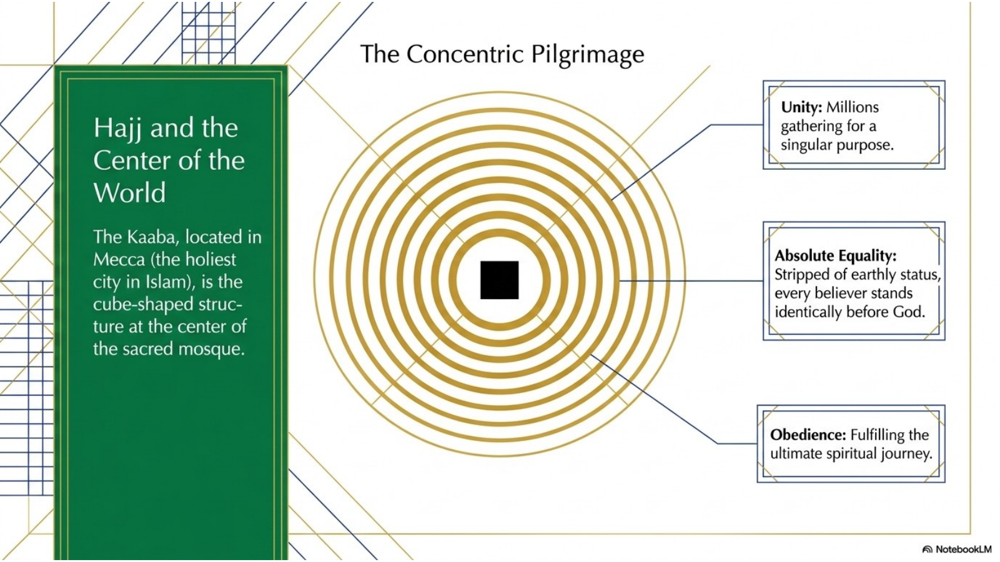
Hajj is the pilgrimage to Mecca, the holiest city in Islam. It is required once in a lifetime for Muslims who are physically and financially able to make the journey. Hajj is not tourism. It is an act of worship that places the believer into a sacred story and a global community.
The Kaaba is the cube-shaped structure at the centre of the Sacred Mosque in Mecca. Muslims around the world pray toward the Kaaba during salat. During Hajj, pilgrims gather around the Kaaba and perform rituals that express obedience, humility, repentance, and unity.
One of the most important themes of Hajj is equality. Pilgrims wear simple clothing associated with ihram, which reduces visible differences in wealth, nationality, and status. The experience emphasizes that all believers stand before God without worldly rank. Hajj is also connected to memory of Abrahamic tradition and to Eid al-Adha, a celebration of sacrifice and obedience to God.
10. Mosque, Imam, and Community Life
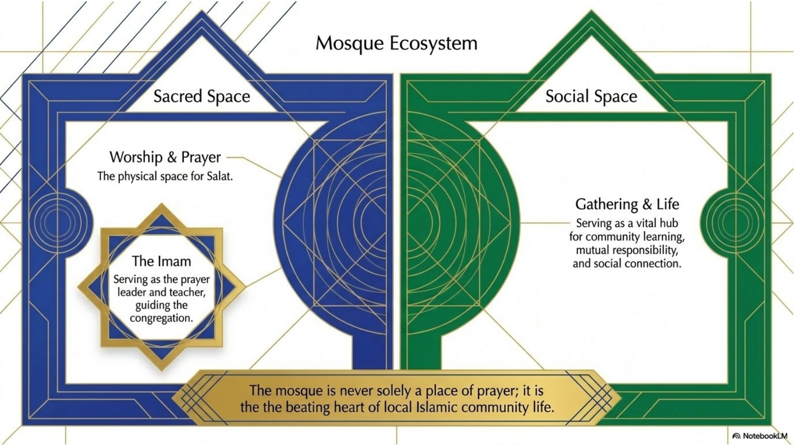
A mosque is a Muslim place of worship. Its most obvious role is as a space for salat, especially Friday congregational prayer. However, the mosque is not only a prayer room. It can also be a place for learning, Qur'an study, community meals, youth activities, charity, marriage ceremonies, funerals, and social support.
Many mosques include features such as a prayer hall, a mihrab that indicates the direction of Mecca, a minbar from which sermons may be delivered, and sometimes a minaret. Practices vary by community, but worshippers commonly remove their shoes before entering prayer spaces. Islamic sacred spaces often avoid human and animal imagery and may use calligraphy or geometric design instead.
An imam commonly leads prayer and may teach or guide the community. The role of imam is not exactly the same in every mosque, and it should not automatically be compared to a priest or minister with universal authority. The key point is that the imam helps lead worship and support religious learning.
11. Sunni and Shia Islam
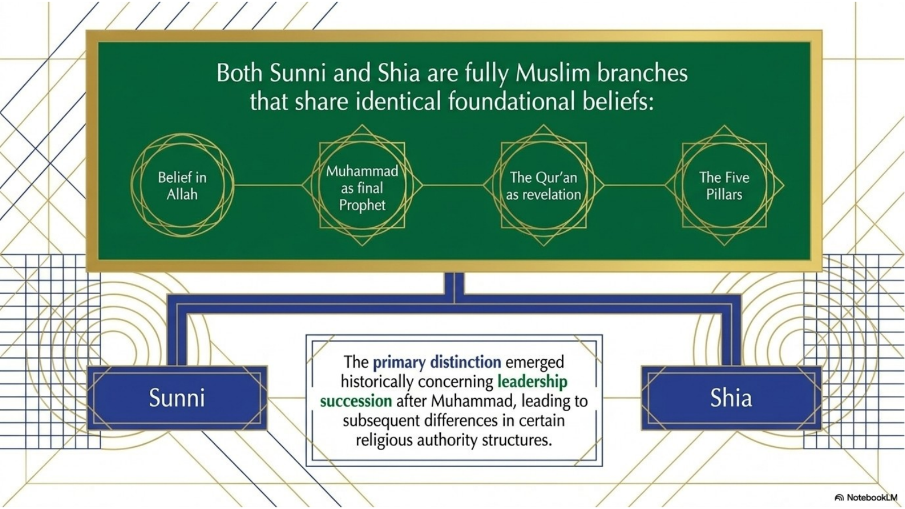
Sunni and Shia Islam are two major branches within the Muslim world. A respectful comparison begins with what they share: belief in Allah, reverence for the Qur'an, honour for Muhammad as Prophet, and commitment to central Islamic practices. Both are fully Muslim traditions.
The historical distinction developed around leadership after Muhammad's death. Sunni Muslims came to emphasize leadership chosen through the wider community and the early caliphs. Shia Muslims came to emphasize leadership connected to Ali, Muhammad's family, and later religious authority associated with the Imams. Over time, these historical differences led to differences in religious authority, memory, law, and practice.
The mistake to avoid is treating Sunni and Shia Muslims as different religions or as enemies by definition. Their differences matter, but they exist inside Islam. Another mistake is pretending they are identical. A strong comparison is both respectful and specific: shared foundations, different historical leadership and authority structures.
12. Islam, Diversity, and Canada
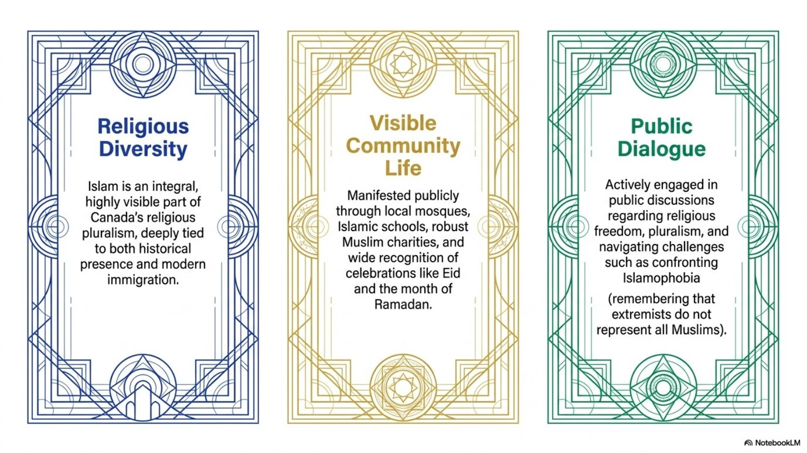
Islam is a global religion practiced by people in many languages, countries, and cultures. It is inaccurate to assume that all Muslims are Arab, that all Muslim communities look the same, or that one political event represents the whole religion. Muslims share central beliefs and practices, but they also live in diverse cultural and national contexts.
In Canada, Islam is visible through mosques, Islamic schools, charities, community organizations, halal food practices, Ramadan and Eid celebrations, chaplaincy, public service, and interfaith work. The chapter materials identify Edmonton's Al Rashid Mosque as a historically important Canadian Muslim institution and as Canada's first mosque.
Public discussion of Islam in Canada often includes religious freedom, pluralism, accommodation, public misunderstanding, and Islamophobia. A respectful approach remembers that extremists do not represent all Muslims. Students should describe Islam and Muslim communities with precision rather than stereotypes.
13. The Ummah: Believer, Mosque, History, and Global Community
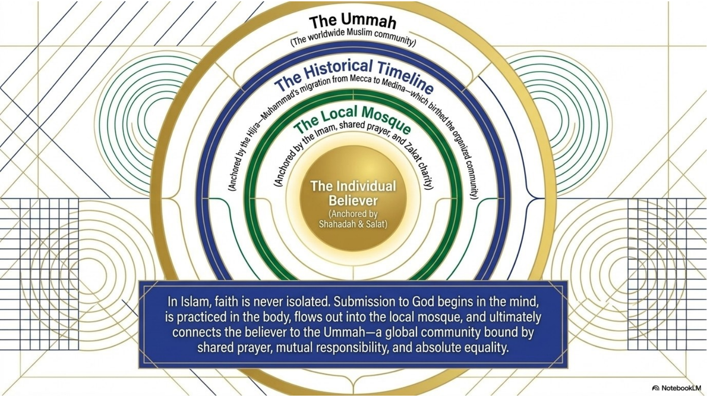
The ummah is the worldwide Muslim community. It connects individual believers through shared belief, prayer, charity, fasting, pilgrimage, memory, and responsibility. The idea of the ummah helps explain why community matters so strongly in Islam.
Islam begins with the individual believer's response to God, but it does not stay isolated inside the individual. Faith is practiced through the body in salat, through wealth in zakat, through appetite in sawm, through travel in hajj, and through shared life in the mosque and community.
The ummah does not erase cultural differences. Muslims live in many countries and belong to many cultures. The point is that Islam gives believers a shared religious identity and a sense of mutual responsibility that stretches beyond local, ethnic, or national boundaries.
14. Researching Islam Respectfully
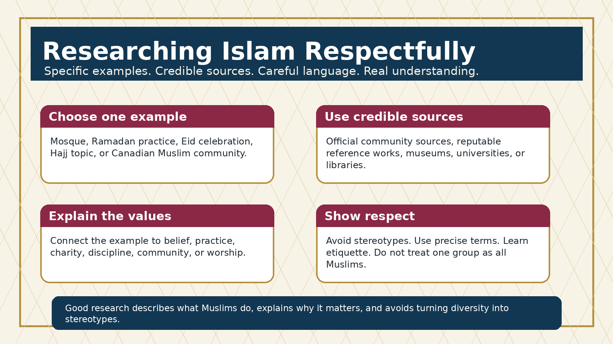
For student-choice research, the source content in this booklet gives background, but outside sources are still required when the task asks for a bibliography. The strongest research does not try to explain all of Islam at once. It selects one clear example and explains it carefully.
For a mosque, describe where it is, who it serves, what happens there, and how it connects worship with community life. For Ramadan, Eid, or Hajj, describe what people do, when it happens, and what beliefs or values the practice expresses. For a Canadian Muslim community, school, charity, organization, or historical example, describe the example accurately and connect it to Islamic values such as worship, learning, service, dignity, charity, or community.
Use credible sources. Good options include official mosque or organization websites, reputable encyclopedias, museum or university resources, library databases, government heritage sources, and sources written by Muslim communities or scholars. Weak options include random blogs, unattributed social media posts, hostile anti-Muslim sources, unsourced AI summaries, or websites that turn one Muslim community into a claim about all Muslims.
A respectful researcher avoids stereotypes. Do not claim that all Muslims are culturally identical. Do not treat extremists as representative of Islam. Do not describe Sunni and Shia as separate religions. Do not assume a practice is universal unless your source says so. When discussing mosques or sacred practices, learn etiquette, use accurate terms, and write as a learner rather than as a judge.
Chapter 8 Glossary
| Term | Meaning |
|---|---|
| Allah | The Arabic word for God; in Islam, the one Creator and ruler of all life. |
| Islam | A monotheistic religion centered on submission to God. |
| Muslim | A person who follows Islam and seeks to submit to God. |
| Tawhid | The Islamic belief in the oneness of God. |
| Muhammad | The Prophet through whom Muslims believe God revealed the Qur'an. |
| Qur'an | The sacred scripture of Islam, understood as the revealed word of God. |
| Sunnah | The example of Muhammad's words and actions. |
| Hadith | Reports about the words and actions of Muhammad. |
| Hijra | Muhammad's migration from Mecca to Medina in 622 CE. |
| Shahadah | The declaration of faith: there is no god but God, and Muhammad is the Messenger of God. |
| Salat | Ritual prayer performed at set times. |
| Wudu | Ritual washing before prayer. |
| Qibla | The direction of prayer toward Mecca. |
| Zakat | Required charitable giving or almsgiving. |
| Sawm | Fasting, especially during Ramadan. |
| Ramadan | The holy month of fasting, prayer, discipline, generosity, and Qur'an recitation. |
| Iftar | The meal that breaks the daily Ramadan fast. |
| Eid al-Fitr | The celebration that marks the end of Ramadan. |
| Hajj | Pilgrimage to Mecca required once in a lifetime for Muslims who are able. |
| Mecca / Makkah | The holiest city in Islam and the location of the Kaaba. |
| Kaaba | The cube-shaped sacred structure at the centre of the Sacred Mosque in Mecca. |
| Ihram | A sacred pilgrimage state and simple clothing associated with Hajj. |
| Eid al-Adha | A major Muslim celebration connected with sacrifice and the Hajj season. |
| Mosque | A Muslim place of worship and community gathering. |
| Imam | A prayer leader or teacher in many Muslim communities. |
| Jumu'ah | Friday congregational prayer. |
| Mihrab | A mosque feature indicating the direction of prayer. |
| Minbar | A pulpit or platform used for sermons. |
| Minaret | A tower associated with mosques and the call to prayer. |
| Ummah | The worldwide Muslim community. |
| Sunni | A major branch of Islam and the largest Muslim branch. |
| Shia | A major branch of Islam emphasizing leadership connected to Ali and the Prophet's family. |
| Pluralism | Making room for different religious and cultural communities in public life. |
| Islamophobia | Prejudice, hostility, or discrimination directed toward Muslims or Islam. |
| Bibliography | A list of sources used in research. |